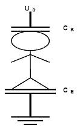
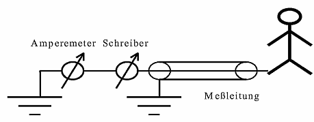
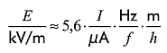

Für Mess- und Berechnungsverfahren siehe z.B. DIN VDE 0848-1, „Sicherheit in elektrischen, magnetischen und elektromagnetischen Feldern; Teil 1: Definitionen, Mess- und Berechnungsverfahren”.
Weitere Normen hierzu sind in Vorbereitung.
1.1 Messgeräte
Messgeräte zur Beurteilung von elektromagnetischen Feldern müssen je nach Frequenzbereich so eingerichtet sein, dass sie die elektrische Feldstärke E, die magnetische Feldstärke H, die magnetische Flussdichte B oder die Leistungsdichte S messen. Die gesamte Messunsicherheit sollte ± 20 % nicht überschreiten.
Messunsicherheiten können z.B. entstehen durch:
1.2 Hinweise zur Vorbereitung und Durchführung von Messungen
Zur Messvorbereitung empfiehlt sich folgende Vorgehensweise:
Die Messungen sind bei der betrieblich maximal auftretenden Leistung durchzuführen. Ist dies nicht möglich, sind die Werte entsprechend hochzurechnen.
Gemessen wird grundsätzlich am unbesetzten Arbeitsplatz. Die Beurteilung der Messergebnisse erfolgt auf der Basis der maximalen, in der gedachten Körperachse des Versicherten gemessenen Werte der Feldstärke oder Leistungsflussdichte am Messort. Die das Messgerät bedienende Person hat darauf zu achten, dass sie sich während der Messung nicht zwischen Feldquelle und Feldsonde bzw. Messantenne befindet und sich alle nicht mit der Messung beauftragten Personen aus dem Bereich des Messortes entfernen.
Feldsonden mit isotroper Empfangscharakteristik, die durch eine orthogonale Anordnung von drei Messwertaufnehmern im Sondenkopf erzielt wird, liefern einen von Einfallsrichtung und Polarisation des zu messenden Feldes weitgehend unabhängigen Messwert.
Feldsonden mit nur einem Messwertaufnehmer oder Messantennen weisen eine Richtcharakteristik auf und erfordern eine Orientierung der Sonde bzw. Antenne im Feld auf Maximumanzeige am Messgerät. Dieser Maximalwert entspricht in vielen Fällen dem Spitzenwert der Feldstärke. Zur Bestimmung des Effektivwertes der Feldstärke ist die Sonde nacheinander in x-, y- und z-Richtung auszurichten und aus den Einzelmesswerten die Feldstärke zu berechnen.
Treten am Arbeitsplatz gleichzeitig Felder von mehr als einer Feldquelle auf, ist folgendes zu berücksichtigen:
1.3 Besonderheiten in den einzelnen Frequenzbereichen
1.3.1 Frequenzbereich bis 100 kHz
Bei zeitabhängiger Richtung der Feldvektoren, z.B. Drehfelder von dreiphasigen Leiteranordnungen, ist die mit eindimensionalen Messwertaufnehmern (Feldsonden mit Richtcharakteristik) gemessene maximale Feldstärke immer kleiner als der Feldstärkewert, der aus Messungen in drei orthogonalen Achsen berechnet werden kann. In diesem Fall muss in drei orthogonalen Achsen gemessen und aus den Einzelmesswerten die Feldstärke berechnet werden.
Es ist bei der Messung der elektrischen Feldstärke besonders darauf zu achten, dass die Messergebnisse nicht durch die feldverzerrende Wirkung von Personen oder Gegenständen, z.B. Messleitungen, unzulässig beeinflusst werden. Deshalb werden die Geräte zur Messung der elektrischen Feldstärke entweder an einer Isolierstange ins Feld gehalten oder das Messgerät befindet sich auf einem Stativ, und die Messwertübertragung erfolgt über einen Lichtwellenleiter zu einem abgesetzten Anzeigeteil (potentialfreie Messung). Auf diesbezügliche Angaben des Geräteherstellers ist zu achten.
Bei inhomogenen elektrischen Feldern sind Messverfahren, die den Gesamtkörperableitstrom erfassen, zulässig.
Siehe hierzu auch Abs. 1.7 "Bewertungsverfahren" dieser BG-Regel
Bei inhomogenen magnetischen Feldern dürfen die maximalen Feldstärken, gemittelt über eine kreisförmige Fläche von 100 cm², die abgeleiteten Werte nicht überschreiten. Verzerrungen des magnetischen Feldes sind nur durch Gegenstände aus Metall (Stahlträger, Armierungen, Blechtüren und -bedachungen, Fahrzeuge) zu erwarten. Personen beeinflussen das magnetische Feld nicht, so dass die Messgeräte vom Messenden direkt ins Feld gebracht werden dürfen.
1.3.2 Frequenzbereich ab 100 kHz
Für die Beurteilung der Exposition ist zu unterscheiden, ob Nah- oder Fernfeldbedingungen vorliegen.
Das Fernfeld einer Strahlungsquelle ist dadurch gekennzeichnet, dass dort die Vektoren der elektrischen und magnetischen Feldstärke senkrecht aufeinander und senkrecht zur Ausbreitungsrichtung stehen und keine gegenseitigen Phasendifferenzen vorliegen. Die elektrische und die magnetische Feldstärke sind direkt über den Feldwellenwiderstand Z0 = 377 Ohm verknüpft. Unter Fernfeldbedingungen genügt die Messung einer Größe (elektrische oder magnetische Feldstärke). Die andere Größe kann für Vergleichszwecke berechnet werden.
Im Nahfeld gelten diese Bedingungen nicht mehr. Die elektrischen und magnetischen Feldstärken haben im allgemeinen verschiedene gegenseitige Phasendifferenzen. Eine einfache Umrechnung zwischen den Feldgrößen ist nicht möglich. Im Nahfeld müssen daher die elektrische und magnetische Feldstärke bzw. die magnetische Flussdichte einzeln ermittelt und bewertet werden.
In der Praxis kann auf Grund der teilweise komplexen Struktur der Strahlungsquellen und durch Umgebungseinflüsse häufig keine zuverlässige Entscheidung getroffen werden, ob am Messort Nah- oder Fernfeldbedingungen vorliegen. Deshalb sollten in diesen Fällen im Frequenzbereich bis 1 GHz die elektrische und die magnetische Feldstärkekomponente getrennt mit einem dafür geeigneten Messwertaufnehmer ermittelt werden. Im Frequenzbereich von 30 MHz bis etwa 1 GHz ist es auch möglich, aus der Messung des Maximums der elektrischen Feldstärke, das durch Reflexionen entstehen kann, die maximale magnetische Feldstärke über den Feldwellenwiderstand zu berechnen:
Oberhalb von 1 GHz ist es ausreichend, die elektrische Feldstärke bzw. die Leistungsdichte zu betrachten.
Dem Einfluss auf die Anzeige des Messgerätes durch Sendeart (Modulationsart) und Vorhandensein mehrerer Frequenzen muss Rechnung getragen werden.
Siehe DIN VDE 0848-1 „Sicherheit in elektrischen, magnetischen und elektromagnetischen Feldern; Teil 1: Definitionen, Mess- und Berechnungsverfahren”.
Der Spitzenwert nach Tabelle 10 der Unfallverhütungsvorschrift "Elektromagnetische Felder" (BGV B11) stellt den Effektivwert dar, der während der höchsten Spitze der Modulationshüllkurve über eine HF-Periode ermittelt wird.
Spitzenwerte können oberhalb von 2 GHz mit breitbandigen Spitzenwertmessgeräten direkt ermittelt werden, auch wenn mehrere unterschiedlich modulierte Frequenzen vorhanden sind.
Effektivwerte können von breitbandigen Messgeräten mit echter Effektivwertanzeige auch bei Vorhandensein mehrerer unterschiedlicher Frequenzen direkt gemessen werden. Bei selektiven Messungen müssen die Einzeleffektivwerte für die jeweiligen Frequenzen zur Ermittlung des Gesamteffektivwertes quadratisch addiert werden.
Die elektrische Feldstärke in einer Raumrichtung kann mit einem Monopol oder Dipol gemessen werden, der kurz gegen die Wellenlänge sein sollte. Die Fußpunktspannung solcher Messantennen ist ein Maß für die elektrische Feldstärke.
Die magnetische Feldstärke in einer Raumrichtung kann mit einer Rahmenantenne gemessen werden, deren Abmessungen ebenfalls klein gegen die Wellenlänge sein sollten. Die Klemmenspannung der Rahmenantenne ist ein Maß für die magnetische Feldstärke senkrecht zur Rahmenfläche.
Mit Geräten, die zur Bestimmung der elektrischen Feldstärke im Fernfeld einen Dipol benutzen und deren Anzeige in Einheiten der elektrischen Feldstärke erfolgt, kann durch Umrechnung die magnetische Feldstärke im Fernfeld ermittelt werden.
Aus den Feldstärkekomponenten der drei zueinander senkrechten Raumrichtungen ergibt sich für jede Frequenz der Betrag der elektrischen bzw. magnetischen Feldstärke durch geometrische Addition.
Eine direkte Messung ist möglich, indem die Fußpunktspannungen von drei senkrecht zueinander angeordneten Messantennen zusammengefasst und angezeigt werden.
Für Teilkörperexposition im Nahfeld, z.B. bei Mobiltelefonen, Handsprechfunkgeräten, ist sinnvollerweise ein Vergleich mit den Basiswerten der Tabelle 1 der Anlage 1 zur Unfallverhütungsvorschrift vorzunehmen. Die Festlegungen der Unfallverhütungsvorschrift sind beim Betrieb solcher Geräte erfüllt, bei denen der Hersteller bzw. Händler den Nachweis erbracht hat, dass die zulässigen Werte der Tabelle 1 der Anlage 1 zur Unfallverhütungsvorschrift eingehalten sind. Die europäischen Normen prEN 50360 und 50361 sowie die deutsche Norm DIN VDE 0848 Teil 1 beschreiben Mess- und Berechnungsverfahren für Telekommunikationsgeräte, mit denen die erforderliche Beurteilung vorgenommen werden kann.
Bei der Messung pulsmodulierter Felder mit Frequenzen größer 300 MHz mit Thermokoppler-Feldsonden, insbesondere an Radaranlagen, sollte 1/10 des maximalen Messbereichs nicht überschritten werden, da die Impuls-Spitzenleistung den Detektor zerstören kann (Warnhinweis des Herstellers beachten!). Das gilt auch für Messungen mit Kombinationen aus Höchstfrequenz- Leistungsmessern und angepassten Antennen, sofern nicht zum Schutz des Leistungsmesskopfes und zur Messbereichserweiterung zwischen Antenne und Leistungsmesskopf Dämpfungsglieder geschaltet wurden.
Die Messung der Exposition im Strahlungsbereich einer Radaranlage ist wie folgt vorzunehmen:
1.4 Messorte und Messpunkte
Messorte und Messpunkte werden nach Erfordernis am Arbeitsplatz und im Aufenthaltsbereich von Versicherten festgelegt.
Die Lage des Messortes sollte durch Entfernungsangaben zu mindestens zwei Bezugspunkten und/oder Bezugslinien in horizontaler Ebene angegeben werden.
Um die Vergleichbarkeit der Messergebnisse für identische Anlagen zu gewährleisten, sollten einheitliche Messpunkthöhen über der Standfläche entsprechend den ergonomischen Maßen für Sitz- und Steharbeitsplätze (jeweils Kopf-, Brust- und Beckenhöhe) verwendet werden. Bei Steharbeitsplätzen wird empfohlen, in Höhen von ca. 1,90 m, 1,55 m, 1,20 m und 0,90 m und bei Sitzarbeitsplätzen von 1,20 m, 0,90 m und 0,45 m über Standfläche zu messen.
Im Bereich bis 100 kHz ist ein Mindestabstand von 20 cm zwischen dem Mittelpunkt des Messwertaufnehmers und berührbaren und zugänglichen Oberflächen einzuhalten.
Bei Messungen niederfrequenter Felder im Freien, insbesondere unter Hochspannungsleitungen, genügt im allgemeinen an einem Messort ein Messpunkt in einer Höhe von 1 m bis 1,5 m über der Standfläche.
1.5 Messprotokoll
1.6 Kontrollmessungen und Nachkalibrierungen
Nach technischen und organisatorischen Veränderungen an den Anlagen, die einen Einfluss auf die Absolutwerte von Feldstärke bzw. Leistungsflussdichte und/oder deren räumliche Verteilung haben können, ist die Einhaltung der zulässigen Grenzwerte durch Kontrollmessungen nachzuweisen.
Zur Sicherung korrekter Feldstärke- bzw. Leistungsflussdichte-Messergebnisse sind in regelmäßigen Abständen Nachkalibrierungen der Messgeräte durch ein anerkanntes Kalibrierlabor zu veranlassen.
1.7 Bewertungsverfahren
Die Einhaltung eines zulässigen Wertes gilt als nachgewiesen, wenn das Messergebnis mindestens um die Kalibrierunsicherheit unter dem zulässigen Wert liegt.
Aus dem Unterschied zwischen der Kalibriersituation und der konkreten Messsituation kann sich ergeben, dass vom Messenden weitere Messunsicherheiten abzuschätzen und zu berücksichtigen sind.
Bei Expositionen durch EM-Felder mit mehreren Frequenzen im Frequenzbereich bis 91 kHz werden die Spektralanteile einzeln und unabhängig von einander nach Anlage 1 bewertet.
1.7.1 Bestimmung der Exposition in inhomogenen elektrischen Feldern durch Messung des Gesamtkörperableitstromes

Für inhomogene Felder ist ein Verfahren zulässig, das durch Vergleich des Gesamtkörperableitstroms in einem homogenen elektrischen Feld eine Beurteilung der Exposition in stark inhomogenen Feldern zuläßt. Der Gesamtkörperableitstrom ist der Körperstrom, der durch Influenzwirkung auf eine im elektrischen Wechselfeld befindliche Person zwischen deren Füßen und der Bodenfläche auftritt. Die Kapazität CE (siehe Abb. 1) wird über ein Strommessgerät praktisch kurzgeschlossen, so dass der influenzierte Strom durch den Messpfad fließt (siehe Abb. 2). Die Person muß hierzu gut isoliert vom Erdboden stehen, damit der Strompfad über die Füße vernachlässigt werden kann. Der Gesamtkörperableitstrom ist ein Maß für die mittlere Feldstärke, in der sich eine Person aufhält. Aus ihm kann die Ersatzfeldstärke des äquivalenten homogenen Feldes berechnet werden.
Da der Ableitstrom hauptsächlich durch die Koppelkapazität CK zwischen Leiter und Person bestimmt wird, ist der Proportionalitätsfaktor von der Körpergeometrie abhängig. Eine genaue Berechnung kann durch die Bestimmung eines personenbezogenen Faktors erreicht werden.

Um die Ableitströme in eine äquivalente homogene Feldstärke umrechnen zu können, muß der Gesamtkörperableitstrom I von den Personen, mit denen die Messungen vorgenommen werden, in einem bekannten bzw. vermessenen homogenen Feld E, z.B. dem unter der Sammelschiene einer Umspannanlage oder eines Prüffeldes, ermittelt werden. Aus der Messung wird dann für jede Person der jeweilige körperbezogene Faktor k=E/I bestimmt. An den entsprechenden Arbeitsstellen mit inhomogenem elektrischen Feld wird dann aus diesem körperbezogenen Faktor k und dem gemessenen Gesamtkörperableitstrom I die Ersatzfeldstärke des äquivalenten homogenen Feldes Ee bestimmt:
Folgende Punkte sollten bei Messungen berücksichtigt werden:
Falls eine Ermittlung des körperbezogenen Faktors k nicht möglich ist, kann hilfsweise auch folgende Näherungsformel benutzt werden:

(2)Gleichung (2) wurde abgeleitet aus den körperbezogenen Faktoren für eine aufrecht stehende Person einer Größe h von 1,65 m. Da nicht allein die Körpergröße h den körperbezogenen Faktor bestimmt, kann die Anwendung dieser Näherung in speziellen Fällen zu größeren Abweichungen führen. [1]
[1] Dörnemann, C.; Gehl
en, C.; Steimel, A.: "Untersuchung der elektrischen Feldexposition von Personen in Anlagen der Energieversorgung", Elektrizitätswirtschaft, Jg. 98 (1999), Heft 9, S. 45-49